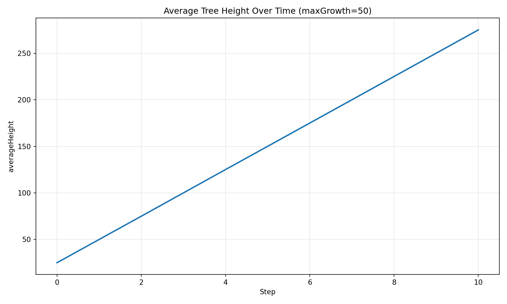
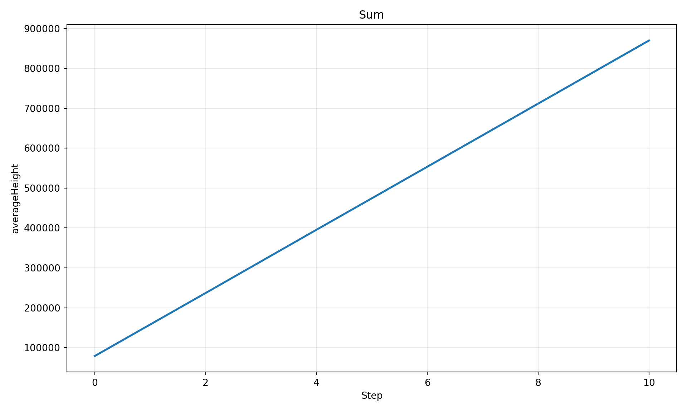
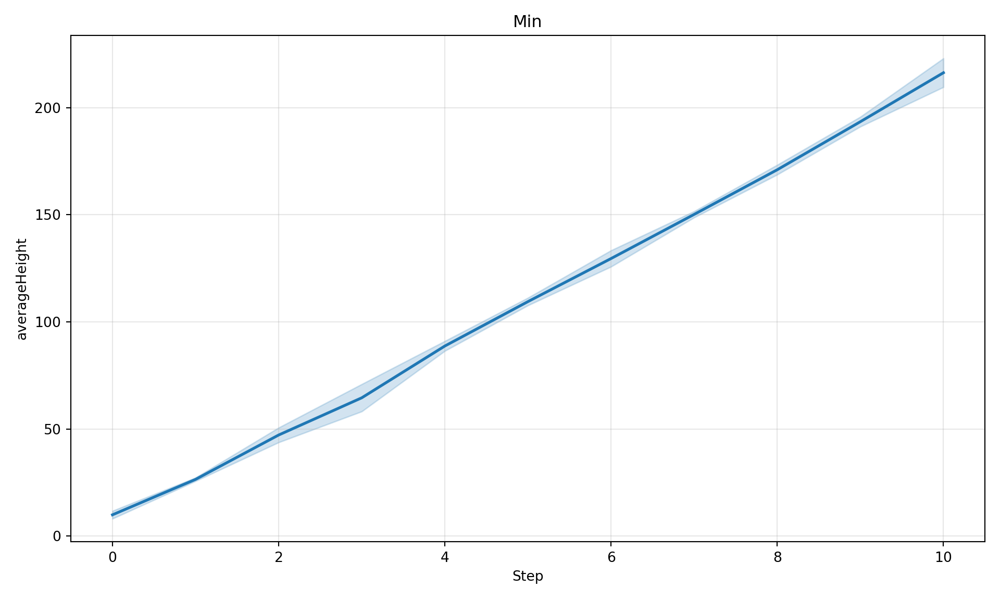
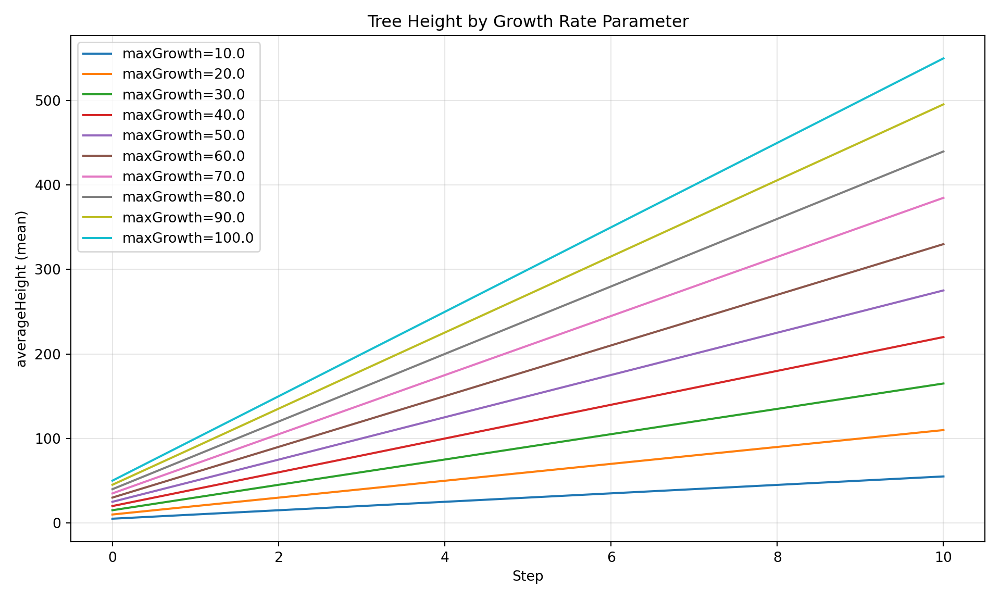
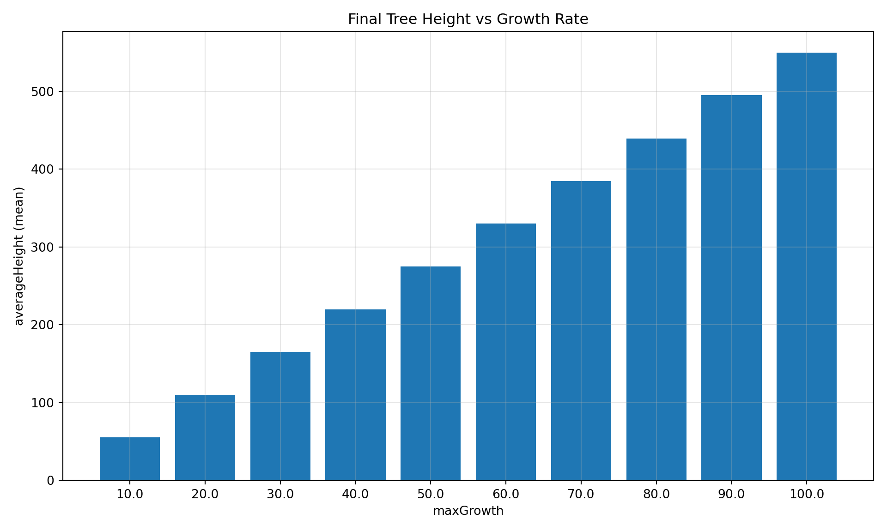
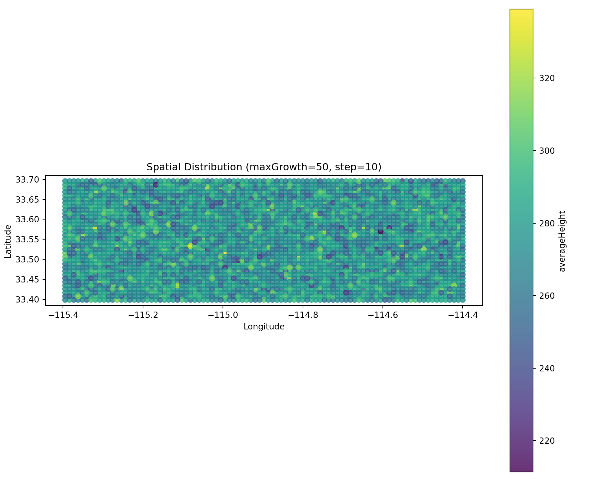
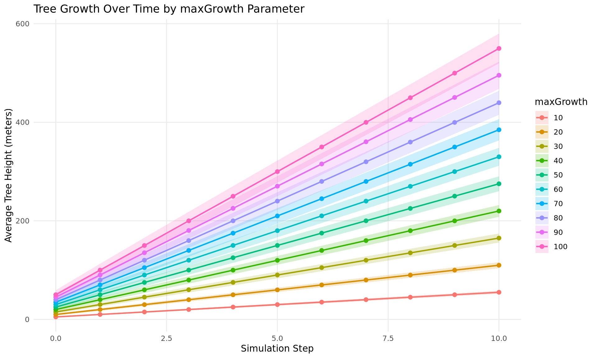
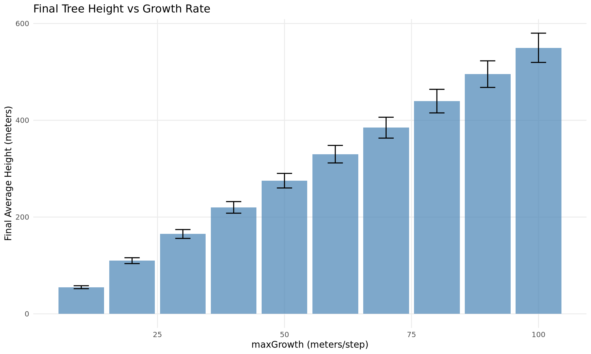
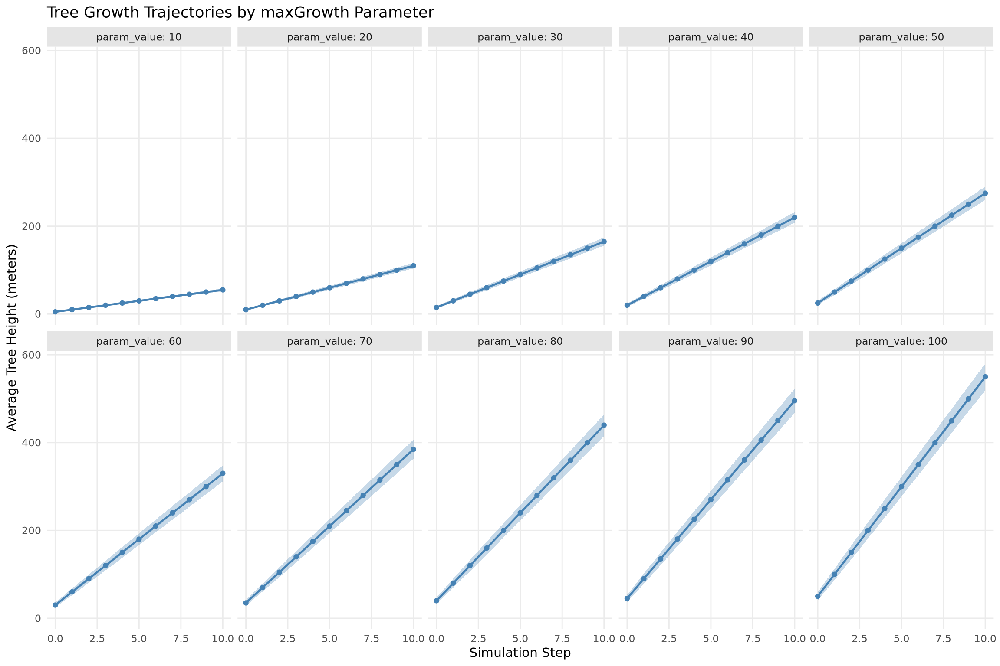

This demo focuses on exploring and visualizing simulation results after they’ve been collected. The analysis layer in joshpy is decoupled from orchestration - it only needs a RunRegistry containing data. Whether the data came from SweepManager, manual workflow, or someone else’s experiment doesn’t matter.
Prerequisites: Run either demo_manual.qmd or demo_sweep_manager.qmd first to generate demo_registry.duckdb.
For orchestration workflows, see:
demo_manual.qmd - Step-by-step control using individual components
demo_sweep_manager.qmd - Simplified workflow with SweepManager
Custom Queries - DiagnosticQueries for common patterns
Direct SQL - Full access to DuckDB for advanced analysis
R/ggplot2 - Publication-quality figures
Setup: Load Registry
Load the registry saved by a previous orchestration demo:
from joshpy.registry import RunRegistry# Load registry from disk (created by demo_manual.qmd or demo_sweep_manager.qmd)REGISTRY_PATH ="demo_registry.duckdb"registry = RunRegistry(REGISTRY_PATH)print(f"Loaded registry from {REGISTRY_PATH}")
Loaded registry from demo_registry.duckdb
Part 1: Data Discovery
Before plotting, discover what data is available in the registry.
# What variables were exported from the simulation?print(f"Export variables: {registry.list_export_variables()}")
Export variables: ['averageAge', 'averageHeight']
# What parameters were swept?print(f"Config parameters: {registry.list_config_parameters()}")
Config parameters: ['maxGrowth']
# What entity types are in the data?print(f"Entity types: {registry.list_entity_types()}")
Entity types: ['patch']
Variable Columns
Variables are stored as real database columns (not JSON), making queries fast and natural:
# List all variable columns in the cell_data tableprint(f"Variable columns: {registry.list_variable_columns()}")
Variable columns: ['averageAge', 'averageHeight']
Part 2: Diagnostic Plots (SimulationDiagnostics)
The SimulationDiagnostics class provides quick matplotlib-based visualizations for simulation sanity checks. These are designed for rapid exploration, not publication.
from joshpy.diagnostics import SimulationDiagnosticsdiag = SimulationDiagnostics(registry)
Time Series
Plot how a variable evolves over simulation steps. By default, spatially aggregates across patches and shows uncertainty bands across replicates.
# Filter by parameter valuediag.plot_timeseries("averageHeight", maxGrowth=50, title="Average Tree Height Over Time (maxGrowth=50)",)

Figure 1: Tree height over time for maxGrowth=50, with replicate uncertainty.
Aggregation Options
# Sum across patchesdiag.plot_timeseries("averageHeight", maxGrowth=50, aggregate="sum", title="Sum")# Min across patchesdiag.plot_timeseries("averageHeight", maxGrowth=50, aggregate="min", title="Min")

Figure 2: Different spatial aggregation methods.

Figure 3: Different spatial aggregation methods.
Parameter Comparison
Compare a variable across different parameter values - ideal for sweep results.
diag.plot_comparison("averageHeight", group_by="maxGrowth", title="Tree Height by Growth Rate Parameter",)

Figure 4: Tree height trajectories across all maxGrowth values.
Bar Chart at Specific Step
diag.plot_comparison("averageHeight", group_by="maxGrowth", step=10, title="Final Tree Height vs Growth Rate",)

Figure 5: Final tree height (step 10) for each maxGrowth value.
Spatial Snapshot
Scatter plot colored by value at a specific timestep:
# Get a run hash for the maxGrowth=50 runs# Find a session that has configs (in case of multiple sessions)sessions = registry.list_sessions()for session in sessions: configs = registry.get_configs_for_session(session.session_id)if configs:break# Parameters may be stored as strings or ints, so compare flexiblyrun_hash_50 =next( c.run_hash for c in configs ifstr(c.parameters.get("maxGrowth")) =="50")diag.plot_spatial("averageHeight", step=10, run_hash=run_hash_50, title="Spatial Distribution (maxGrowth=50, step=10)",)

Figure 6: Spatial distribution of tree height at step 10 for maxGrowth=50.
Saving Figures
All plot methods return a matplotlib Figure that can be saved:
For full flexibility, query DuckDB directly. Export variables are stored as typed columns, making queries clean and fast.
Simple Aggregations
# Mean, min, max across all cells per stepresult = registry.query(""" SELECT step, AVG(averageHeight) as mean_height, MIN(averageHeight) as min_height, MAX(averageHeight) as max_height, STDDEV(averageHeight) as std_height, COUNT(*) as n_cells FROM cell_data GROUP BY step ORDER BY step""")print(result.df().to_string(index=False))
# Find cells where trees grew above a thresholdresult = registry.query(""" SELECT step, COUNT(*) as n_cells_above_50, AVG(averageHeight) as mean_height_of_those FROM cell_data WHERE averageHeight > 50 GROUP BY step ORDER BY step""")print(result.df().to_string(index=False))
# Get distribution statistics per stepresult = registry.query(""" SELECT step, APPROX_QUANTILE(averageHeight, 0.25) as p25, APPROX_QUANTILE(averageHeight, 0.50) as median, APPROX_QUANTILE(averageHeight, 0.75) as p75, APPROX_QUANTILE(averageHeight, 0.95) as p95 FROM cell_data GROUP BY step ORDER BY step""")print(result.df().to_string(index=False))
# Export query results to CSVregistry.query(""" SELECT step, AVG(averageHeight) as mean_height FROM cell_data GROUP BY step ORDER BY step""").df().to_csv("/tmp/height_by_step.csv", index=False)print("Exported to /tmp/height_by_step.csv")
Exported to /tmp/height_by_step.csv
Part 5: R/ggplot2 Visualization
For publication-quality figures, R can query the DuckDB registry directly - no CSV export needed.
Connect R to DuckDB
# Connect directly to the same registry filecon <-dbConnect(duckdb(), "demo_registry.duckdb", read_only =TRUE)# Install JSON extension for parameter extractiondbExecute(con, "INSTALL json; LOAD json;")
[1] 0
# Query directly from R - same SQL you'd use in Pythondf <-dbGetQuery(con, " SELECT json_extract_string(j.parameters, '$.maxGrowth') as param_value, c.step, AVG(c.averageHeight) as mean_value, STDDEV(c.averageHeight) as std_value, COUNT(*) as n_cells FROM cell_data c JOIN job_configs j ON c.run_hash = j.run_hash GROUP BY json_extract_string(j.parameters, '$.maxGrowth'), c.step ORDER BY CAST(json_extract_string(j.parameters, '$.maxGrowth') AS INTEGER), c.step")# Convert param_value to numeric for proper orderingdf$param_value <-as.numeric(df$param_value)print(paste("Loaded", nrow(df), "rows directly from DuckDB"))
if (nrow(df) >0) { p <-ggplot(df, aes(x = step, y = mean_value, color =factor(param_value), fill =factor(param_value))) +geom_ribbon(aes(ymin = mean_value - std_value, ymax = mean_value + std_value), alpha =0.2, color =NA) +geom_line(linewidth =0.8) +geom_point(size =2) +labs(x ="Simulation Step",y ="Average Tree Height (meters)",title ="Tree Growth Over Time by maxGrowth Parameter",color ="maxGrowth",fill ="maxGrowth" ) +theme_minimal() +theme(legend.position ="right",panel.grid.minor =element_blank() )print(p)} else {cat("No data to plot.")}

Figure 7: Tree height trajectories with uncertainty ribbons (ggplot2).
Bar Chart with Error Bars
if (nrow(df) >0) { final_df <- df |> dplyr::filter(step ==max(step)) p <-ggplot(final_df, aes(x = param_value, y = mean_value)) +geom_col(fill ="steelblue", alpha =0.7) +geom_errorbar(aes(ymin = mean_value - std_value, ymax = mean_value + std_value),width =3,linewidth =0.6 ) +labs(x ="maxGrowth (meters/step)",y ="Final Average Height (meters)",title ="Final Tree Height vs Growth Rate" ) +theme_minimal() +theme(panel.grid.minor =element_blank())print(p) r <-cor(final_df$param_value, final_df$mean_value)cat(sprintf("\nCorrelation between maxGrowth and final height: r = %.4f\n", r))} else {cat("No data to plot.")}
Correlation between maxGrowth and final height: r = 1.0000

Figure 8: Final tree height vs growth rate parameter with error bars.
Faceted Plot
if (nrow(df) >0) { p <-ggplot(df, aes(x = step, y = mean_value)) +geom_ribbon(aes(ymin = mean_value - std_value, ymax = mean_value + std_value), alpha =0.3, fill ="steelblue") +geom_line(color ="steelblue", linewidth =0.8) +geom_point(color ="steelblue", size =1.5) +facet_wrap(~param_value, ncol =5, labeller = label_both) +labs(x ="Simulation Step",y ="Average Tree Height (meters)",title ="Tree Growth Trajectories by maxGrowth Parameter" ) +theme_minimal() +theme(panel.grid.minor =element_blank(),strip.background =element_rect(fill ="gray90", color =NA) )print(p)} else {cat("No data to plot.")}

Figure 9: Faceted time series - one panel per maxGrowth value.
# Close the R connection when donedbDisconnect(con, shutdown =TRUE)
Part 6: Advanced Patterns
Spatial Analysis with GeoPandas
Export spatial data for GIS analysis:
# Get spatial snapshot with coordinatesdf = queries.get_spatial_snapshot( step=10, variable="averageHeight", run_hash=run_hash_50,)# Save with coordinates for GIS toolsdf.to_csv("/tmp/spatial_snapshot.csv", index=False)print(f"Saved {len(df)} cells to /tmp/spatial_snapshot.csv")
Saved 6324 cells to /tmp/spatial_snapshot.csv
# If you have geopandas:# import geopandas as gpd# gdf = gpd.GeoDataFrame(# df, # geometry=gpd.points_from_xy(df.longitude, df.latitude),# crs="EPSG:4326"# )# gdf.to_file("/tmp/snapshot.gpkg")
Combining Multiple Sessions
# List all sessions in the registrysessions = registry.list_sessions()print(f"Sessions in registry: {len(sessions)}")
Sessions in registry: 2
for s in sessions:print(f" {s.session_id[:8]}... - {s.experiment_name} ({s.status})")
# Export entire cell_data table to Parquet for external analysis# registry.to_parquet("results.parquet")# Export to CSV# registry.to_csv("results.csv")print("Use registry.to_parquet() or registry.to_csv() for bulk export")
Use registry.to_parquet() or registry.to_csv() for bulk export
Summary
This demo covered the joshpy analysis workflow:
Task
Tool
Notes
Discovery
registry.get_data_summary()
What’s in the registry?
Quick plots
SimulationDiagnostics
matplotlib-based, fast iteration
DataFrames
DiagnosticQueries
Returns pandas for further processing
Full SQL
registry.query()
Direct DuckDB access
R/ggplot2
dbConnect(duckdb(), ...)
Query DuckDB directly from R
Key Points:
Analysis is decoupled from orchestration - same workflow for any data source
Export variables are typed columns (not JSON) for fast, natural queries
R can query the registry directly via the duckdb package - no CSV export needed
Direct DuckDB access via registry.query() or registry.conn